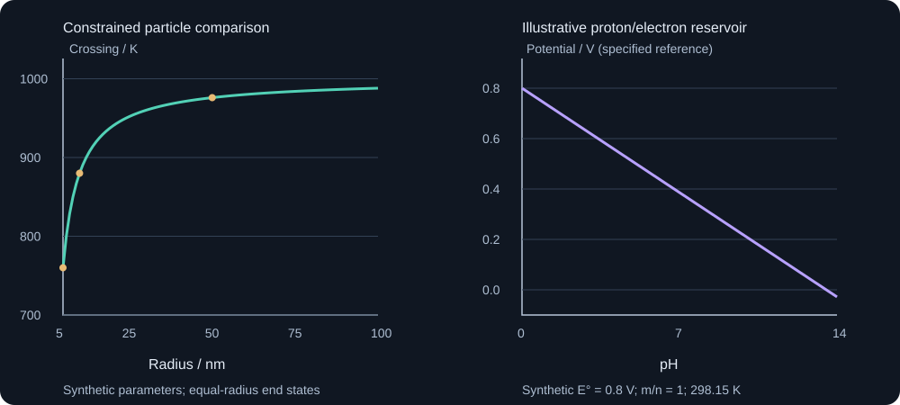

24. Size, electrochemical reservoirs and the limits of a database
A free-energy model answers a question only after its system boundary and admissible states have been specified. A small particle pays an interfacial cost, an electrode exchanges charge with a reservoir, and a steelmaking bath exchanges matter and heat. These additions change the optimization problem. They do not make missing phase descriptions or kinetic information appear automatically.
1. A surface contribution has both an average and a derivative
For an incompressible, single-component spherical particle, stipulate a constant bulk molar volume \(V_m\), radius \(r\), and isotropic surface free energy per area \(\gamma\). Work at a specified temperature and external pressure, using the surrounding phase as the reference for the interfacial excess. With the geometry and mechanical restrictions held as declared, the simple total-energy model is
\[G(n)=n g_b+\gamma A(n),\qquad A=4\pi r^2,\qquad n=\frac{4\pi r^3}{3V_m}.\]Two different questions now have different answers. The surface contribution to total energy divided by total moles is
\[\frac{G_s}{n}=\gamma\frac{A}{n}=\frac{3\gamma V_m}{r}.\]The surface contribution to the incremental chemical potential when material is added to that same particle is instead
\[\left(\frac{\partial G_s}{\partial n}\right)_{T,\gamma,V_m}=\gamma\frac{dA}{dn}=\frac{2\gamma V_m}{r}.\]The factor difference follows from \(A\propto n^{2/3}\). It is not resolved by changing a label from surface energy to surface tension. At \(\gamma=1\) J/m², \(V_m=10^{-5}\) m³/mol and \(r=10\) nm, the two contributions are 3000 and 2000 J/mol. The program differentiates the actual area numerically as an additional check. A bulk extensive phase has identical average and partial molar energy for a pure substance; this finite particle's surface term is not extensive under enlargement of a single particle.
The recording first obtains the derivative expression and later introduces a factor-three model. The derivation above makes the distinction explicit without claiming that one number universally replaces the other in every nanoscale equilibrium. Comparing the total energies of two constrained particles, exchanging atoms between particles, and varying the number of particles at a fixed radius are different variations. A thermodynamic derivative must state which one is allowed.
For example, two particles with the same bulk composition and constant positive interfacial energy have surface chemical potentials proportional to \(1/r\). Transferring a little material from the smaller to the larger lowers their combined surface energy. Thus an arbitrary collection of fixed small particles is generally a constrained or kinetically persistent state, rather than a proof of unconstrained equilibrium at that size. The calculation establishes a direction of energy change; it does not supply the diffusion rate of coarsening.
2. Define the constrained phase comparison before shifting a diagram
Consider a deliberately simple comparison between an all-solid particle and an all-liquid particle, with the same number of atoms, the same stipulated volume and radius, and the same surroundings. Ignore elastic energy, facets, segregation and mixed solid–liquid geometries. Let their bulk difference be \(g_l-g_s=\Delta s_f(T_m^\infty-T)\), with a positive constant fusion entropy. Adding their total molar surface contributions gives
\[\Delta g_{l-s}(T,r)=\Delta s_f(T_m^\infty-T)+\frac{3V_m(\gamma_l-\gamma_s)}{r}.\] \[T_\times(r)=T_m^\infty+\frac{3V_m(\gamma_l-\gamma_s)}{r\Delta s_f}.\]This is a crossing of two declared constrained states. It is not a general melting-temperature formula for every embedded precipitate or partially molten particle. In particular, it does not compare every possible core–shell interface configuration. With \(T_m^\infty=1000\) K, \(\Delta s_f=10\) J/(mol K), \(V_m=10^{-5}\) m³/mol, \(\gamma_s=1\) and \(\gamma_l=0.6\) J/m², the crossings are 760, 880 and 976 K at radii 5, 10 and 50 nm. The negative shift results from the stipulated liquid's lower surface cost; reversing that cost difference reverses the shift. No real substance has been fitted here.
One must not extrapolate the continuum expression to arbitrarily small radii and interpret a negative crossing temperature as a physical prediction. Atom count, shape, structural changes and the meaning of a smooth interfacial excess eventually matter. Likewise, adding a curvature-induced bulk pressure correction and an independently inserted surface chemical-potential correction without a common energy model can count the same effect twice. Start from a total potential and take its constrained variations consistently.

A multicomponent surface creates additional variables. If \(\gamma\) changes with composition, temperature, curvature, strain or surface segregation, the derivative of \(\gamma A\) includes derivatives of \(\gamma\), not just the area term. For a segregated surface, atoms in the surface excess and in the interior must satisfy the chosen overall or reservoir balances. A geometrical correction factor cannot identify those constitutive dependencies from bulk Gibbs energies alone.
A free nanoparticle, a precipitate embedded in another phase, a thin film and a nanocrystalline aggregate also have different interface counts and constraints. In an aggregate, a shared grain boundary must not be charged twice merely because it touches two grains. A film may have two external surfaces plus a substrate interface; a precipitate may carry misfit strain. The source's 10 nm Bi–Sn example illustrates that size can alter phase relations, but its numerical shift is not validated by the generic sphere calculation here.
3. A fast microscopic path does not determine a macroscopic transport rate
The recording introduces reduced activation barriers for grain-boundary and dislocation-pipe motion and combines their mobilities with a bulk contribution. A useful restricted model is to assign scalar mobilities \(M_b\), \(M_{gb}\) and \(M_p\) to three paths under the same temperature, composition and driving-force convention. For equal prefactors and positive activation energy \(Q\), a stipulated reduction factor \(f\) gives
\[\frac{M_f}{M_b}=\exp\!\left[\frac{(1-f)Q}{RT}\right].\]The prefactor convention matters: some mobility parameterizations include a common \(1/(RT)\), while a diffusivity has different units. Such a common factor cancels in this ratio. The lecture's illustrative barrier multipliers 0.5 and 0.8 are retained as choices for the numerical example, rather than asserted as universal constants or current software defaults. A surface/grain-boundary/pipe/lattice hierarchy is not a theorem independent of species, structure, segregation and temperature.
Stipulate fractions \(f_{gb}=\delta/d\), \(f_p=\rho b^2\) and \(f_b=1-f_{gb}-f_p\). Here \(\delta\) and \(d\) are lengths, the dislocation line length per volume \(\rho\) has units m⁻², and the Burgers-vector magnitude \(b\) is a length. These expressions are dimensional surrogates; the exact geometrical coefficients, pipe area and overlap treatment are not specified by dimensional analysis. Require all fractions to be nonnegative before interpreting them as fractions.
At \(\delta=0.5\) nm, \(d=50\) nm, \(\rho=10^{15}\) m⁻² and \(b=0.25\) nm, they are 0.01, 0.0000625 and 0.9899375. Under a common force acting along parallel paths, the arithmetic model gives
\[M_{\parallel}=f_bM_b+f_{gb}M_{gb}+f_pM_p.\]At 1000 K and \(Q=200\) kJ/mol, the chosen barrier reductions give \(M_{\parallel}/M_b=1673.481770\). A tiny fast-path fraction can dominate this particular sum. This does not imply a measured nanocrystalline alloy diffuses 1673 times faster: the chosen paths must connect to the source and sink, and exchange between the paths and interior may be rate limiting.
The contrasting scalar series arrangement, with the same fractions along a transport route, gives
\[M_{\mathrm{series}}^{-1}=f_b/M_b+f_{gb}/M_{gb}+f_p/M_p.\]Its ratio to the bulk mobility is only 1.010164 for the same local numbers. These two one-dimensional arrangements isolate the effect of topology. The arithmetic and harmonic means have the expected ordering for positive coefficients; neither is a general multicomponent diffusion tensor or a complete grain-boundary transport theory. Grain growth, evolving dislocation density, segregation and concentration-dependent thermodynamic factors create further coupling. An activation-barrier substitution alone supplies none of these automatically.
4. Electrochemical equilibrium adds reservoirs and a sign convention
Lesson 59, 13:00–14:16, followed by an original equilibrium derivation.
For a species of signed charge number \(z_i\), a common convention writes its molar electrochemical potential as \(\widetilde\mu_i=\mu_i+z_iF\phi\), where \(F\) is the Faraday constant and \(\phi\) the phase's inner electric potential. The chemical term includes its activity dependence. Individual single-ion activities and inner potentials require conventions; one should not mistake the decomposition into two terms for two independently measured quantities. Equilibrium constrains the relevant electrochemical-potential differences.
To obtain an operational electrode boundary, write a reduction explicitly:
\[\mathrm{Ox}+m\mathrm H^++n e^-\rightleftharpoons\mathrm{Red},\qquad n>0.\]For this convention, the equilibrium electrode potential relative to the same stated reference is
\[E=E^\circ-\frac{RT}{nF}\ln\frac{a_{\rm Red}}{a_{\rm Ox}a_{\mathrm H^+}^{m}}. \tag{24.1}\]This sign and reaction-quotient convention agrees with the IUPAC Nernst-equation definition. Products enter the logarithm with positive stoichiometric coefficients, reactants with negative ones, and all activities are dimensionless. Electron transfer is represented by the electrode potential; an extra independently chosen electron activity must not be inserted into the same operational quotient a second time.
Using \(\mathrm{pH}=-\log_{10}a_{\mathrm H^+}\), with the other activities held fixed, gives
\[\frac{\partial E}{\partial\mathrm{pH}}=-\frac{m}{n}\frac{RT\ln10}{F}.\]At 298.15 K, the decade factor is 0.059159350 V for the constants used in the program. For a purely illustrative \(E^\circ=0.8\) V and \(m=n=2\), the boundary is 0.385884552 V at pH 7 and −0.028230896 V at pH 14. These are not measured oxide potentials. A reaction with no proton coefficient has no direct pH slope under fixed other activities, although speciation can make those activities pH dependent.
For \(\mathrm M^{2+}+2e^-\rightleftharpoons\mathrm M\), treating the pure metal's activity as one, \(E=E^\circ+(RT/2F)\ln a_{\mathrm M^{2+}}\). With an illustrative standard value −0.2 V and ion activity \(10^{-6}\), the result is −0.377478049 V. Replacing activity by a dimensional concentration without a standard-state normalization would make the logarithm physically undefined. Complex formation and ionic-strength effects belong to the chemical model; they are not repaired by drawing a line through a convenient pH value.
5. A stability region does not specify a corrosion current
A potential–pH diagram compares admissible metal, aqueous and solid-product states under declared temperature, pressure, activities and reservoir conditions. The recording describes metal stability, dissolved-species stability and solid-film stability as immunity, corrosion and passivation regions. Those are useful thermodynamic interpretations, with a crucial qualification: stability of an oxide or hydroxide does not establish that its actual film is continuous, adherent, sufficiently resistive or able to repair a defect.
The gap can be seen without inventing a corrosion model. Keep the same equilibrium reaction and write a kinetic law with a positive reaction coefficient multiplying its thermodynamic driving force. Changing that coefficient changes the current or reaction rate while leaving the zero-driving-force boundary unchanged. A more complete electrode model also needs anodic and cathodic reaction kinetics, transport, local chemistry and electrical constraints. The corrosion potential of a working mixed electrode can reflect a balance of nonzero partial currents, rather than equilibrium of every participating reaction.
Consequently, neither a stable-film label nor an immunity region is an unrestricted claim of zero observed damage under every service condition. Local depletion, metastable states, stress, film breakdown and externally imposed currents change what must be modeled. A phase-stability calculation is valuable precisely as a declared thermodynamic comparison; its axes do not supply time, film morphology or a rate law. The source's commercial Pourbaix module is not executed in this edition.
6. Process metallurgy changes the mass and energy boundary conditions
For a closed isothermal-isobaric mixture of metal, slag, gas and solid phases, minimize their total Gibbs energy subject to elemental balances and any required charge constraints. The framework is the same as for an alloy; the species models, activities and accessible phases are different. A slag is not automatically an ideal solution, and a gas's pressure dependence cannot generally be ignored just because condensed-phase pressure effects were small in an earlier example.
If the surroundings instead fix an oxygen chemical potential, oxygen is an open component. The appropriate constrained problem can be expressed through \(\Omega=G-\mu_{\mathrm O}^{res}N_{\mathrm O}\), while the closed-component amounts remain conserved. Here \(N_{\mathrm O}\) counts moles of oxygen atoms, so an oxygen-gas reservoir gives \(\mu_{\mathrm O}^{res}=\mu_{\mathrm O_2}/2\). The chosen potential and amount conventions must match. A fixed total oxygen inventory is a different problem from a fixed oxygen partial pressure.
For a transparent reaction example, take \(\mathrm M+\tfrac12\mathrm O_2\rightleftharpoons\mathrm{MO}\), unit activities for its pure condensed phases and an ideal oxygen gas. At a fixed temperature,
\[\Delta_r g=\Delta_r g^\circ-\frac{RT}{2}\ln(p_{\mathrm O_2}/p^\circ),\qquad \log_{10}(p_{\mathrm O_2}^{eq}/p^\circ)=\frac{2\Delta_r g^\circ}{RT\ln10}.\]With a stipulated \(\Delta_r g^\circ=-200\) kJ/mol at 1500 K, the equilibrium logarithm is −13.928965365. Below that oxygen pressure the negative logarithm makes oxidation less favorable; above it the gas reservoir supports oxidation for this reaction model. Real alloy and slag activities change the result. This example is not a steelmaking database calculation, and it predicts no reaction time.
A process allowed to change temperature needs an energy balance as well. An adiabatic vessel does not keep T fixed while releasing reaction heat: equilibrium and the specified enthalpy constraint must be solved together, with phase changes, heat capacities and the actual incoming streams. A finite-rate flow reactor also needs residence time, heat transfer, mixing and interface transport. Equilibrium can provide driving forces and limiting states to that model, but cannot replace its conservation equations or kinetics.
7. A database's element list is not its assessed domain
The final recording uses a missing or inadequately extended sigma-phase description to show how one subsystem can change a multicomponent prediction. The illustrated database versions and quantitative phase fractions were not independently recovered here. The general optimization implication is exact: adding a previously unavailable candidate state can only leave the minimum energy unchanged or lower it, provided the old candidate states and their energies are retained. A solver that accurately minimizes an incomplete state set has not thereby ruled out the missing phase.
For an elementary binary construction, let pure A and pure B both have zero energy, and initially permit only their mixture. Its envelope is zero at every overall composition. Add an AB line phase at \(x_B=1/2\) with molar energy −500 J/mol. At bulk \(x_B=0.4\), a mixture of 0.8 mole fraction AB and 0.2 A conserves composition and has energy −400 J/mol. The enlarged envelope is \(-1000\min(x_B,1-x_B)\) J/mol. Nothing in the original solver's convergence tolerance could have discovered a phase that was excluded from its candidate set.
Likewise, binary data do not identify all ternary interactions. The two functions \(g_\pm=g_{base}\pm27000 x_Ax_Bx_C\) J/mol agree exactly on all three binary edges because one fraction vanishes there. At the equiatomic ternary center, their corrections are −1000 and +1000 J/mol. Even perfect edge data leave this interior difference unresolved. This is a direct identifiability example, not a claim that every actual ternary assessment needs this particular interaction.
For C components, there are \(\binom C2\) binary and \(\binom C3\) ternary subsystems. Both counts equal 10 for five components; the conflicting isolated ASR number is not used. Fractions of fully assessed binaries and ternaries, often denoted \(F_{AB}\) and \(F_{AT}\), summarize subsystem coverage. They do not encode the temperature/composition domain, experimental uncertainty, phase completeness or compatibility of every assessment. A value of one is not a probability of correctness, and a low value does not prove every specific prediction wrong.
The selected methods discussion in Kattner's 2016 review explains the dependence of higher-component descriptions on their assessed subsystems. A change to one unary description in a six-component system reaches five binaries and ten ternaries containing it. Consistency of shared reference functions and phase models therefore matters as much as counting entries. An alloy can contain only elements named in a database while lying far outside the data-rich part of its intended domain.
8. Historical milestones describe an evolving infrastructure
The method joins critically evaluated measurements and calculations, thermodynamic functions and a constrained equilibrium solver. The point of its history is the progressive construction of reusable, mutually compatible descriptions. Kattner's inspected introductory account identifies Kaufman and Bernstein's 1970 book as a foundation and the common SGTE elemental references as a major step; its Dinsdale reference is dated 1991. These milestones support the framework, rather than a claim that phase diagrams began to be calculated only in 1970.
Integrated computational materials engineering also predates the 2011 Materials Genome Initiative. The National Research Council's 2008 ICME report establishes that chronology, while NIST's 2012 account dates the initiative's announcement to June 2011. The initiatives and earlier CALPHAD work are connected efforts, rather than a single strict sequence in which one invented the other. No claim about present funding or the current performance of a particular commercial tool follows from those historical dates.
9. Faster predictions need uncertainty and an audit of the missing variables
The source proposes richer databases, first-principles inputs, high-throughput experiments, multiscale coupling and machine learning. They address different bottlenecks. Parameter optimization can improve a model within its chosen phase set; it cannot establish that no phase is missing. A precise DFT energy is not automatically a finite-temperature Gibbs function with vibrational, magnetic and configurational contributions. A larger simulation cannot compensate for an uncalibrated interface mobility simply by refining its mesh.
Keep numerical error distinct from model uncertainty. If a computed phase-energy difference is −300 J/mol and a stipulated model-discrepancy bound is ±500 J/mol, the admissible difference interval [−800,200] crosses zero. Reporting a solver residual of \(10^{-8}\) J/mol does not determine the sign under that bound. The bound is an assumption in this example, not a confidence interval inferred from data. A probabilistic prediction would need an explicit statistical model, parameter correlations, calibration and a check of model inadequacy.
One useful AI project is a small thermodynamic surrogate that learns a single phase potential and obtains entropy, enthalpy and heat capacity by differentiating that same function. It can then be checked against exact derivative identities, elemental balances, limiting compositions and held-out equilibrium/thermochemical data. This is a proposed learning project, not a claim that any neural potential is accurate. Enforcing derivative consistency alone does not guarantee stable low-temperature behavior, correct phase order or safe extrapolation. Individual phase branches may legitimately be nonconvex and metastable; blindly convexifying every branch can erase the very information needed for transformations.
A meaningful next calculation therefore declares its components, phase candidates, database version, reference states, size/shape or reservoirs, thermal boundary conditions and kinetic model before producing a color map. Preserve enough output to check chemical and energy balances and the competing states that control the conclusion. This is how the course's equilibrium constructions become useful inputs to new materials problems without silently changing their scientific meaning.
10. Reproduce the restricted numerical audits
Run the exact downloadable program from the book root with Python 3. It uses only the standard library. Its parameters are teaching choices: it does not read an assessed TDB, generate a real Pourbaix diagram, solve a diffusion field or reproduce the recording's commercial case studies. Surface energy and reaction energy are in joules, lengths in meters, temperatures in kelvin and activities/pressure ratios dimensionless.
"""Original size, transport, electrochemical and database-scope audits.
Synthetic parameters only: not an assessed alloy/corrosion/process simulation.
"""
from math import pi, exp, log, log10, comb, isclose
R, F = 8.31446261815324, 96485.33212331002
vm, gamma, radius = 1e-5, 1.0, 10e-9
n = 4 * pi * radius**3 / (3 * vm)
def area(moles):
return 4 * pi * (3 * vm * moles / (4 * pi)) ** (2 / 3)
average = gamma * area(n) / n
partial = 2 * gamma * vm / radius
step = n * 1e-5
finite = gamma * (area(n + step) - area(n - step)) / (2 * step)
assert isclose(average, 3000.0, rel_tol=1e-12)
assert isclose(partial, 2000.0, rel_tol=1e-12)
assert isclose(finite, partial, rel_tol=1e-9)
print(
(
f"Spherical surface contribution, total/n and derivative: "
f"{average:.6f}"
f", "
f"{partial:.6f}"
f" J/mol"
)
)
print(f"Centered finite-difference derivative: {finite:.6f} J/mol")
# Equal volumes and equal constrained radius, constant surface energies.
for rnm in (5.0, 10.0, 50.0):
shift = 3 * vm * (0.6 - 1.0) / (rnm * 1e-9)
tm = 1000.0 + shift / 10.0
assert abs(10 * (1000 - tm) + shift) < 1e-9
print(f"Fixed-radius two-state crossing, radius {rnm:g} nm: {tm:.6f} K")
# Toy parallel/series scalar paths; geometric weights are stipulated.
T, Q = 1000.0, 200000.0
fgb, fp = 0.5e-9 / (50e-9), 1e15 * (0.25e-9) ** 2
fb = 1 - fgb - fp
assert min(fgb, fp, fb) >= 0
mgb, mp = exp((1 - 0.5) * Q / (R * T)), exp((1 - 0.8) * Q / (R * T))
parallel = fb + fgb * mgb + fp * mp
series = 1 / (fb + fgb / mgb + fp / mp)
assert series <= parallel and fb + fgb + fp == 1.0
print(f"Toy path fractions bulk/GB/pipe: {fb:.8f}, {fgb:.8f}, {fp:.8f}")
print(
(
f"Toy effective/bulk mobility, parallel and series: "
f"{parallel:.6f}"
f", "
f"{series:.6f}"
)
)
# Reduction Ox + mH+ + ne- = Red; all other activities unity.
T = 298.15
slope = R * T * log(10) / F
print(f"Nernst decade factor at 298.15 K: {slope:.9f} V")
for ph in (0.0, 7.0, 14.0):
potential = 0.8 - slope * ph # m=n=2
print(
f"Illustrative m/n=1 reduction boundary, pH {ph:g}: {potential:.9f} V"
)
metal = -0.2 + slope / 2 * log10(1e-6)
print(f"Illustrative M2+/M boundary at ion activity 1e-6: {metal:.9f} V")
# M + .5 O2 -> MO, unit condensed activities and ideal oxygen gas.
T, dg0 = 1500.0, -200000.0
logp = 2 * dg0 / (R * T * log(10))
assert abs(dg0 - 0.5 * R * T * log(10**logp)) < 1e-8
print(f"Toy oxide equilibrium log10(pO2/pstandard): {logp:.9f}")
print(
"Five-component binary/ternary subsystem counts: "
f"{comb(5, 2)}, {comb(5, 3)}"
)
# Two ternary models agree on every binary edge but differ in the interior.
for sign in (-1.0, 1.0):
interaction = sign * 27000.0 * (1 / 3) ** 3
assert sign * 27000.0 * 0.0 * 0.4 * 0.6 == 0.0
print(
(
f"Edge-invisible ternary interaction at center: "
f"{interaction:.6f}"
f" J/mol"
)
)
# Closed binary: pure A/B at zero, an optional AB line phase at x=.5.
z = 0.4
old = 0.0
sigma_fraction = 2 * min(z, 1 - z)
new = -500 * sigma_fraction
assert new <= old
print(
(
f"Missing-phase toy at x=.4, restricted/enlarged envelope: "
f"{old:.6f}"
f", "
f"{new:.6f}"
f" J/mol"
)
)
# Stipulated bounded model discrepancy; not inferred confidence levels.
margin, error = -300.0, 500.0
print(
(
f"Energy-difference interval under stipulated bound: ["
f"{margin - error:.1f}"
f", "
f"{margin + error:.1f}"
f"] J/mol"
)
)
Spherical surface contribution, total/n and derivative: 3000.000000, 2000.000000 J/mol Centered finite-difference derivative: 2000.000000 J/mol Fixed-radius two-state crossing, radius 5 nm: 760.000000 K Fixed-radius two-state crossing, radius 10 nm: 880.000000 K Fixed-radius two-state crossing, radius 50 nm: 976.000000 K Toy path fractions bulk/GB/pipe: 0.98993750, 0.01000000, 0.00006250 Toy effective/bulk mobility, parallel and series: 1673.481770, 1.010164 Nernst decade factor at 298.15 K: 0.059159350 V Illustrative m/n=1 reduction boundary, pH 0: 0.800000000 V Illustrative m/n=1 reduction boundary, pH 7: 0.385884552 V Illustrative m/n=1 reduction boundary, pH 14: -0.028230896 V Illustrative M2+/M boundary at ion activity 1e-6: -0.377478049 V Toy oxide equilibrium log10(pO2/pstandard): -13.928965365 Five-component binary/ternary subsystem counts: 10, 10 Edge-invisible ternary interaction at center: -1000.000000 J/mol Edge-invisible ternary interaction at center: 1000.000000 J/mol Missing-phase toy at x=.4, restricted/enlarged envelope: 0.000000, -400.000000 J/mol Energy-difference interval under stipulated bound: [-800.0, 200.0] J/mol
11. Exercises with complete solutions
1. Which surface number belongs to which variation?
For a constant-volume-per-mole sphere, derive both the surface energy per mole and the surface contribution to chemical potential. Explain why they differ.
Solution
Substitute \(n=4\pi r^3/(3V_m)\) into \(G_s=4\pi\gamma r^2\). Division gives \(G_s/n=3\gamma V_m/r\). For enlargement of one particle, \(dA/dr=8\pi r\), \(dn/dr=4\pi r^2/V_m\), so \(dG_s/dn=2\gamma V_m/r\). Equivalently \(G_s\propto n^{2/3}\), and differentiation multiplies \(G_s/n\) by 2/3. At the stated 10 nm radius the values are 3000 and 2000 J/mol. The average describes the total-energy comparison; the derivative describes incremental exchange under the declared enlargement variation. Nonextensivity of the surface term makes them unequal.
2. Determine the sign and scope of the size shift
Derive the two-state crossing at 5 nm. Would the crossing still shift downward if the liquid surface cost exceeded the solid's?
Solution
With the stipulated equal radius and volume, \(\Delta g=10(1000-T)+3(10^{-5})(0.6-1)/(5\times10^{-9})\) J/mol. The second term is −2400 J/mol, so equality gives T=760 K. If \(\gamma_l-\gamma_s\) were positive, the added cost would oppose liquid formation and the crossing would move above 1000 K. This comparison excludes mixed interfaces, elastic changes and alternative shapes; it is not a universal nanoparticle melting law. Using the incremental factor-two chemical potential in place of the declared total energy would answer a different variational question.
3. Let the surface constitutive model change during enlargement
If \(\gamma=\gamma(n)\) along an imposed family of states, what additional derivative appears? What information is still missing?
Solution
The product rule gives \(d(\gamma A)/dn=2\gamma V_m/r+A\,d\gamma/dn\), for the same constant \(V_m\) spherical geometry. A curvature-dependent \(\gamma(r)\) contributes \(A\gamma_r\,dr/dn\). Composition or strain changes create further path derivatives. Their numerical values require a constitutive model and constraints; neither the bulk molar Gibbs function nor dimensional analysis supplies them. If atoms segregate to the surface, the surface/interior material balance and relevant partial derivatives must also be specified rather than treating an overall composition as every region's composition.
4. Check the fast-path fractions and the topology counterexample
Find the three fractions in the example, explain why the parallel enhancement is large, and state why it does not fix the overall diffusion rate.
Solution
\(f_{gb}=0.5/50=0.01\), \(f_p=10^{15}(0.25\times10^{-9})^2=0.0000625\), and \(f_b=0.9899375\). All are nonnegative and sum to one. The barrier reductions give ratios \(e^{0.5Q/(RT)}\) and \(e^{0.2Q/(RT)}\), so even a small grain-boundary fraction carries a large common-force parallel flux. The arithmetic ratio is 1673.481770, while the same fractions arranged in series give the harmonic ratio 1.010164 because the slow bulk part dominates resistance. Connectivity, path/interior exchange and the thermodynamic factor are therefore needed to make a physical transport prediction. These scalar arrangements are not a reconstruction of a three-dimensional grain network.
5. Derive a pH slope without losing the reduction sign
For \(\mathrm{Ox}+2\mathrm H^++2e^-\rightleftharpoons\mathrm{Red}\), derive the pH dependence with unit nonproton activities. What changes for a proton-free metal-ion reduction?
Solution
The quotient is \(Q=a_{\rm Red}/(a_{\rm Ox}a_H^2)=a_H^{-2}\), so \(\ln Q=2\ln10\,\mathrm{pH}\). Substitution in \(E=E^\circ-(RT/2F)\ln Q\) gives \(E=E^\circ-(RT\ln10/F)\mathrm{pH}\). At 298.15 K the slope is −0.059159350 V per pH unit. For \(\mathrm M^{2+}+2e^-\to\mathrm M\), Q=1/\(a_{\mathrm M^{2+}}\), so \(E=E^\circ+(RT/2F)\ln a_{\mathrm M^{2+}}\). It has no explicit proton term at fixed metal-ion activity. In a real solution, a speciation model can couple that activity to pH.
6. Recover the oxygen-pressure boundary and its meaning
For the stated oxide reaction at 1500 K, derive the equilibrium pressure ratio and decide which side favors oxidation. Would this determine an oxidation time?
Solution
With condensed activities one, Q=\((p_{\mathrm O_2}/p^\circ)^{-1/2}\). Therefore \(\Delta g=\Delta g^\circ-(RT/2)\ln(p_{\mathrm O_2}/p^\circ)\). Equality gives \(\log_{10}(p_{\mathrm O_2}^{eq}/p^\circ)=2(-200000)/(R\,1500\ln10)=-13.928965365\). Increasing oxygen pressure lowers this oxidation free-energy change; reducing pressure raises it. The equation sets an equilibrium boundary under the stipulated activities. It supplies no gas delivery rate, interfacial reaction coefficient or product-layer diffusivity, hence no oxidation time. A closed finite oxygen inventory also requires a different conservation calculation from a fixed-pressure reservoir.
7. Why does adding an admissible phase never raise the old minimum?
Prove the statement and apply it to the AB line-phase example at bulk fraction 0.4.
Solution
Every feasible old assemblage remains feasible in the enlarged problem by assigning zero amount to the new phase. Minimization over this superset cannot give a higher minimum, provided the energies and constraints of the retained old states are unchanged. For pure A/B energies zero, the restricted envelope is zero. With an AB line phase at x=0.5 and energy −500, balance at x=0.4 permits 0.8 AB plus 0.2 A, giving −400 J/mol. For x≤0.5 the optimal AB amount is 2x; for x≥0.5 it is 2(1−x), giving the displayed V-shaped lower envelope. Reassessing old phase energies at the same time would invalidate the unchanged-old-objective premise.
8. Can complete binary coverage certify a ternary prediction?
Use the edge-invisible interaction to answer, and count the binary and ternary subsystems of a five-component alloy.
Solution
On any binary edge one of \(x_A,x_B,x_C\) is zero, so both signs of \(27000x_Ax_Bx_C\) contribute exactly zero. At the equiatomic center their contributions are ±1000 J/mol, a 2000 J/mol separation despite identical edge values. Thus those binary data alone cannot identify the interior coefficient. For five components the counts are \(5\times4/2=10\) and \(5\times4\times3/6=10\). A coverage fraction summarizes how many specified subsystems are assessed, rather than the posterior probability that a chosen alloy has a particular equilibrium phase. Domain, phase completeness and assessment quality remain additional information.
9. Separate numerical certainty, model uncertainty and historical chronology
A solver reports −300 J/mol with residual \(10^{-8}\), and a stipulated model bound is ±500 J/mol. Is the phase order established? What should a learned surrogate preserve? Did ICME begin after the 2011 initiative?
Solution
The allowed energy difference is [−800,200] J/mol, so the sign is unresolved under that bound. The tiny residual describes numerical solution of the chosen model, not its discrepancy from the material. A learned potential can preserve derivative identities by deriving s,h and heat capacity from the same function, while still requiring independent checks of physical limits, phase competition and held-out data. It should not erase all metastable/nonconvex branches to manufacture apparent certainty. Finally, the inspected 2008 National Research Council ICME report predates the 2011 MGI announcement; the latter advanced a related agenda rather than creating the entire earlier field. This establishes only that chronological relation, not a full institutional history.
The last extension of the course is a discipline of specifying the problem: which states and interfaces exist, which quantities are conserved, which reservoirs act, and which kinetics remain unknown. Once those choices are visible, a phase diagram becomes a testable consequence of a model that can be improved.